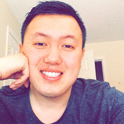

My name is Billy Lee. I am 27 years old. I obtained a Associates
of Arts degree from Century College in 2013 currently finishing up
my bachelor's degree at Metro State University in Computer Science. I've attended
the University of Minnesota (Twin Cities), Century College, and Metro
State University throughout my academic career.
Why Computer Science? To be honest with you, I wasn't quite sure. I dabbled
a lot in other majors before finally deciding on Computer Science. Throughout
my life, I've always sort of had an interest in it. From the age of 7, I remember
programming me a little DOS program that asked me questions and responded back
with answers based off my answer. It was something super simple, but who would've
thought it would've led to me one day persuing something similar? At around the
age of 12, I started to fiddle with some webdesign myself, but the passion for web
design wasn't completely there. I noticed that I tended to favor the programming side
of things more than the design aspect of things. Eventually, at the age of 16, I started
fiddling with this IDE called BLITZ BASIC because I always wanted to create my own video
game. After that, came college and eventually I started getting myself involved in other
programming projects once I started learning a little more about the concepts.
Throughout this website, you'll find out certain things about myself. Whether that be about my hobbies, classes I've taken throughout my Academic Career in relation to Computer Science or projects I've worked on with my spare time. Of course, this is a work in progress page and I'll be updating it as I continue to strengthen my knowledge of Computer Science as a whole.